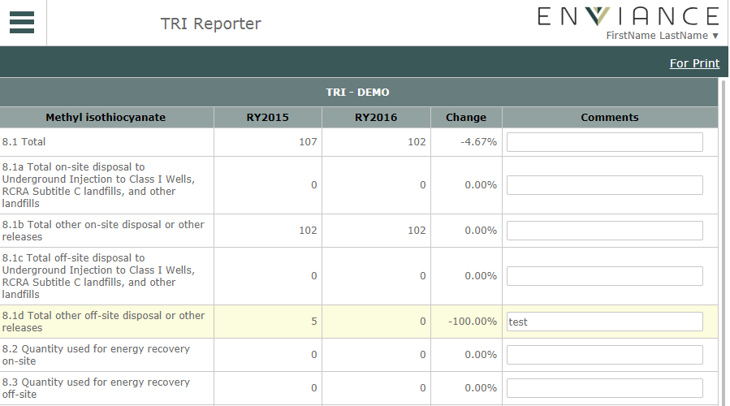

If you transferred data from the previous year, and the current year data shows a change of 25% or more in emissions from the prior year, you will need to document the reasons for the change.
TRI Reporter will automatically calculate the change once the form has been submitted.
To document a 25% change in emissions:
On the Home page, check the chemical FormR and click Submit.
If the TRI release values on the form show at least a 25% change, the status will now be "25% Change".
Click the 25% Change status link to open the documentation form.
The fields requiring documentation will be highlighted in yellow. Add comments to each field to indicate the reason for the change.
